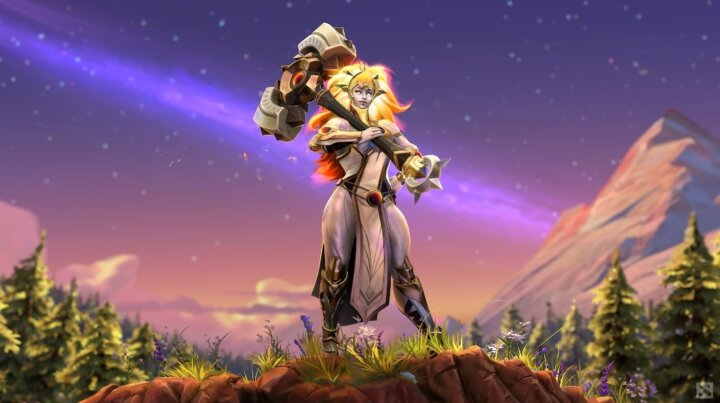

Dota 2 update 7.29 brings new hero Dawnbreaker
The latest patch from Valve has more than 100 changes to regular and neutral items, and the heroes, including the addition of Dawnbreaker, their newest hero.
Bringing light in the dark with her celestial powered hammer, Dawnbreaker is a melee carry heroïne whose abilities help turn out damage, stun opponents as well as healing nearby allies.
The naming of her abilities follows the celestial theme. Starbreaker, celestial hammer, luminosity, and solar guardian are the aptly chosen names.
Starbreaker: Dawnbreaker whirls her hammer around 3 times, damaging enemies with her attack and bonus damage. On the final strike, she smashed her hammer down, stunning and damaging enemies in front of her.
Celestial Hammer: Dawnbreaker hurls her weapon at a target, damaging enemies struck along the way. The hammer pauses briefly at the destination before flying back to her, leaving a blazing trail that slows enemies. Dawnbreaker can recall the hammer at any time, pulling her towards it so they meet in the middle.
Luminosity: After 3 attacks, Dawnbreaker powers up, charging her next attack with a critical hit that heals all allied heroes around her for a portion of attack damage deal
Solar Guardian: Dawnbreaker creates a pulsing effect at a location near an allied hero anywhere on the map, damaging enemies and healing allies with each pulse. After a short duration, she flies to the target location, dealing additional damage and stunning enemies upon landing.
Along with the new hero, Valve brings modifications to Dota 2’s map, moving ward cliffs, outposts, and more.
Other noteworthy changes include the removal of 3 TP scrolls on certain heroes. Those heroes will be granted a scroll on death. Buying a scroll will now cost 100 gold instead of 90.
A lot of items got (small) reworks, abilities casting ranges got altered, and Bounty runes no longer spawn in the river.
A Water Power Rune was added, instantly restoring 100 health and 80 mana when used. Can be used to fill bottles.